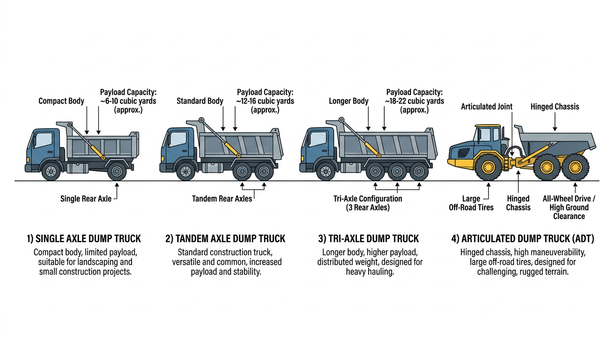

AI Extractable Answer
Dump truck financing is widely available for new and used equipment. Typical cost: $80k?$180k new, $45k?$90k used. Businesses with strong credit and established revenue may qualify with little or no down payment. Terms typically 36?60 months for used, 60?84 months for new.
Definition
A dump truck is a heavy commercial vehicle designed to transport loose materials such as sand, gravel, or demolition debris. Dump trucks are widely used in construction, mining, and infrastructure projects because they can hydraulically unload materials at job sites.
Quick Answer
Dump trucks typically cost between $80,000 and $180,000 depending on size, configuration, and whether the unit is new or used. Businesses with strong credit and established revenue may sometimes qualify for financing with little or no down payment.
Quick Facts About Dump Truck Financing
Average price range: $80k ? $180k
Typical loan terms: 36?60 months
Common buyers: contractors, excavation companies, aggregate haulers
Credit profile: strong businesses may qualify with no down payment
Typical time to financing decision: 24?72 hours
Compare to Other Vehicles
| Vehicle | Typical Cost | Typical Revenue Potential | Typical License Required |
|---|---|---|---|
| Dump Truck | $80k ? $180k | Construction hauling | Class B CDL |
| Tow Truck | $60k ? $150k | Roadside services | Class B CDL |
| Bucket Truck | $90k ? $250k | Utility contracting | Often Class B CDL |
| Semi Truck | $120k ? $200k | Freight | Class A CDL |
| Vac Truck | $150k ? $350k | Septic/environmental | Often Class B CDL |
| Box Truck | $35k ? $80k | Delivery | Sometimes no CDL |
View full vehicle comparison chart ?
Typical Revenue Potential
Businesses using dump trucks can generate revenue in the following ranges. Results vary based on location, contracts, and business scale.
| Business Type | Typical Annual Revenue Range |
|---|---|
| Dump Truck Business | $150k ? $600k+ |
Single-truck operations typically fall in the lower range; multi-truck fleets and contract-heavy businesses reach the upper range. See revenue potential by business type for a full comparison.
Common Dump Truck Configurations
- Single axle dump truck ? One rear axle; lighter payload; suited for residential and light commercial work
- Tandem axle dump truck ? Two rear axles; standard for construction, aggregate hauling, and site work
- Tri-axle dump truck ? Three rear axles; higher payload capacity; common for heavy haul and paving
- Articulated dump truck ? Articulated chassis; off-road capability; used in mining, quarry, and rough terrain

Who Needs Dump Truck Financing?
Dump truck financing serves construction contractors, aggregate haulers, paving companies, site work operators, and materials suppliers. Single-truck owner-operators and multi-truck fleets both use these loans. Revenue typically comes from haul rates, tonnage, or contract work. Lenders evaluate business stability, revenue history, and equipment value.
Dump Truck vs. Semi Truck
Dump trucks haul materials for construction and site work; semi trucks move freight over the road. See the full Dump Truck vs Semi Truck comparison for costs, industries, and financing structures.
| Vehicle Type | Typical Cost | Common Industries | Typical Financing Structures |
|---|---|---|---|
| Dump Truck | $80,000 ? $180,000 | Construction, hauling | 36?60 months; 10?15% down |
| Semi Truck | $120,000 ? $200,000 | Freight, logistics | 48?72 months; 10?15% down |
Dump Truck vs. Other Equipment
| Truck Type | Typical Cost Range | Common Industries | Typical Financing Term |
|---|---|---|---|
| Dump Truck | $80,000 ? $180,000 | Construction, hauling | 36?60 months |
| Semi Truck | $120,000 ? $200,000 | Freight, logistics | 48?72 months |
| Bucket Truck | $90,000 ? $250,000 | Utilities, telecom | 48?72 months |
| Vac Truck | $150,000 ? $350,000 | Environmental services | 48?72 months |
| Cement Truck | $150,000 ? $250,000 | Ready-mix, concrete | 48?72 months |
Learn more about:
Semi truck financing Bucket truck financing Vac truck financing Cement truck financingIndustry Use
| Truck Type | Typical Industry | Typical Job |
|---|---|---|
| Dump Truck | Construction | Hauling aggregate |
| Vac Truck | Environmental | Hydro excavation |
| Bucket Truck | Utilities | Power line maintenance |
| Cement Truck | Construction | Ready-mix delivery |
Typical Financing Scenarios
Financing terms vary by borrower profile. Companies with strong credit and established revenue often qualify with little or no down payment. Higher-risk scenarios?startups, owner-operators without load history, or businesses rebuilding credit?may require 20?30% down, shorter terms, or higher rates.
- Established trucking companies: Fleets with 2+ years in business typically receive the best terms?often 10?15% down or less.
- Owner-operators: May qualify with carrier agreements or load history. Down payments of 15?25% are common.
- Startups: Often need 20?30% down, a business plan, and proof of contracts.
- Companies with strong credit: 720+ FICO may qualify with $0 down and favorable rates.
- Companies rebuilding credit: Specialty lenders may work with 580?650 scores; expect 15?25% down.
Credit Profile and Down Payment
Down payments are not mandatory for all borrowers. Requirements are risk-based.
| Credit Profile | Typical Down Payment Scenario |
|---|---|
| Strong credit and established business | Often possible with $0 down |
| Good credit | Sometimes minimal down payment |
| Moderate credit | 5?10% down may be required |
| Challenged credit or startups | 10?25% down may be required |
Standard vs. Tri-Axle Dump Trucks
Standard dump trucks (single or tandem axle) and tri-axle dump trucks are both financed. Tri-axle units have higher payload capacity and often higher acquisition costs. Lenders treat both similarly?valuation depends on chassis, body capacity, and condition. Tri-axle dump trucks may qualify for slightly higher advance rates due to stronger resale in heavy haul markets.
New vs. Used Dump Truck Financing
New dump trucks qualify for 60?84 month terms, lower rates, and 10?15% down for qualified borrowers. Used dump truck financing typically runs 36?60 months with 20?30% down. Lenders consider body condition, chassis mileage, and remaining useful life. A well-maintained 3-year-old dump truck will have better terms than a 7-year-old unit with high mileage.
Operating Cost Examples
| Expense Category | Typical Monthly Range |
|---|---|
| Fuel | $1,500 ? $4,000 |
| Insurance | $800 ? $2,000 |
| Maintenance | $400 ? $1,500 |
| Driver wages | $4,000 ? $7,000 |
What Lenders Evaluate
- Revenue: Haul revenue, contract income, or tonnage. Seasonal construction revenue is common?lenders may average or use peak season.
- Time in business: 12?24 months minimum for most programs; 2+ years for stronger terms.
- Credit: Personal and business credit affect rate and approval.
- Equipment: Age, mileage, body condition, and chassis specs.
Financing Terms
Advance rates cap at 80?90% for new and 70?80% for used. Rates typically range from 7% to 15% APR for qualified borrowers. Down payments are risk-based?strong credit and established businesses may qualify with no down payment.
Related Equipment
Cement truck financing covers ready-mix trucks used by concrete suppliers. Flatbed truck financing covers flatbeds for materials and equipment. Semi truck financing covers tractors; some dump operations use semi trailers. Snow plow truck financing covers trucks with plow attachments?some dump trucks are plow-equipped for winter work.
Getting Started
Gather business documentation, equipment details (make, model, year, body capacity, price), and proof of revenue or contracts. Compare programs from multiple lenders. Axiant Partners matches construction and hauling businesses with dump truck financing options.
Licensing and Regulatory Requirements
Licensing requirements for operating a dump truck vary by state, vehicle weight, business activity, and cargo type. The following is general guidance?businesses should verify requirements with their state motor vehicle agency and the FMCSA.
Licensing Quick Answer
Most dump trucks require a Class B CDL because they exceed 26,000 pounds gross vehicle weight. Businesses operating commercial vehicles across state lines may also need DOT registration.
Driver License Requirements
Commercial vehicles are regulated by weight (GVWR?gross vehicle weight rating) and configuration. Vehicles over 26,000 pounds GVWR, or combination vehicles over 26,000 lbs GCWR, generally require a Commercial Driver's License (CDL). Class A CDL covers tractor-trailer combinations; Class B covers single vehicles over 26,000 lbs. Requirements vary by state?some states have additional rules for intrastate operations.
License Requirement Table
| Vehicle Type | CDL Required | Typical Weight Class | Additional Certifications |
|---|---|---|---|
| Dump Truck | Class B CDL | 26,000+ GVWR | DOT registration often required |
| Semi Truck | Class A CDL | 26,000+ GVWR | DOT registration required for interstate trucking |
| Bucket Truck | Often Class B CDL depending on weight | Utility operation | OSHA safety training often required |
| Box Truck | Sometimes no CDL under 26,000 lbs | Light commercial | DOT number if interstate commerce |
| Vac Truck | Often Class B CDL | Heavy vocational vehicle | Environmental / safety training may apply |
DOT Registration Requirements
Businesses that operate commercial motor vehicles in interstate commerce must register with the U.S. Department of Transportation (DOT) and obtain a USDOT number. Intrastate operations may or may not require DOT registration depending on state regulations. Requirements vary by state, vehicle weight, and type of operation.
| Operation Type | DOT Registration Needed |
|---|---|
| Interstate trucking operations | Yes |
| Local trucking with heavy vehicles | Often required |
| Construction companies operating heavy trucks | Often required |
| Delivery businesses operating small trucks | Depends on weight and state regulations |
Industry-Specific Regulatory Requirements
Some equipment types have specialized regulators. Construction dump trucks may be subject to OSHA and state construction regulations. Aggregate hauling may have additional weight and permit requirements.
| Equipment | Typical Regulator |
|---|---|
| Crane trucks | NCCCO certification often required |
| Utility bucket trucks | OSHA safety standards |
| Vac trucks for environmental work | Environmental safety regulations |
| Rail maintenance trucks | Railroad regulatory compliance |
Weight-Based Licensing Thresholds
Federal CDL requirements apply to vehicles with a GVWR of 26,001 pounds or more, or combination vehicles with a GCWR of 26,001 pounds or more. Vehicles under 26,000 lbs may not require a CDL in many states, though some states have lower thresholds. Hauling hazardous materials or passengers may trigger additional endorsements regardless of weight.
Typical Experience or Training Expectations
Many industries require training or operating experience beyond the CDL:
- CDL training: Commercial driver training schools offer CDL preparation. Some employers provide in-house training.
- Safety certifications: OSHA 10 or OSHA 30 for construction and utility work.
- Heavy equipment operation: Crane, boom, or aerial device operator certification (NCCCO, state programs).
- Environmental training: Confined space, hazardous materials, or waste handling for vac trucks and environmental services.
- Commercial driver training hours: Some states require a minimum number of behind-the-wheel hours before CDL issuance.
Can You Operate This Vehicle Without a CDL?
Most dump trucks exceed 26,000 pounds GVWR and require a Class B CDL. Smaller dump trucks under 26,000 lbs may not require a CDL in some states, but most commercial dump trucks used in construction exceed this threshold.
Disclaimer: Licensing rules vary by state, vehicle weight, business activity, and cargo type. Requirements change over time. Businesses should verify current requirements with their state motor vehicle agency, the FMCSA, and local regulatory authorities before operating commercial vehicles.
Common Questions
Do you need a CDL to drive a dump truck?
Most dump trucks require a Class B CDL because they exceed 26,000 pounds gross vehicle weight. Businesses operating commercial vehicles across state lines may also need DOT registration.
What class CDL is required for a dump truck?
Usually Class B CDL. 26,000+ GVWR. Requirements vary by state and vehicle configuration.
Do operators need special training for a dump truck?
CDL training is required. OSHA safety training may apply for construction. Heavy equipment operation experience is often expected.
Do you need a DOT number for a dump truck?
DOT registration is typically required for interstate commerce. Intrastate operations depend on state regulations. Verify with the FMCSA and your state agency.
How long does it take to get licensed for a dump truck?
CDL training programs typically run 2?8 weeks. State testing and endorsement processing may add time. Endorsements (tanker, hazmat) require additional testing.
Can a startup business operate a dump truck?
Yes. Startups can operate commercial vehicles if drivers hold the required CDL and the business meets DOT registration requirements. Financing may require proof of contracts or revenue.
What credit score is needed to finance a dump truck?
Most lenders prefer 600+ for competitive rates. 720+ typically qualifies for the best terms. Some specialty lenders work with scores in the 550?600 range with higher down payments.
How much down payment is required for dump truck financing?
Typically 10?30%. New dump trucks often allow 10?15% for qualified borrowers; used may require 20?30%. Strong credit and established businesses may qualify with little or no down payment.
Can startups finance dump trucks?
Yes. Some lenders work with newer businesses. Expect 20?30% down, proof of contracts or revenue, and strong personal credit. Construction contractors with haul contracts often qualify.
How long do dump truck loans usually last?
New dump trucks: 60?84 months. Used: 36?60 months depending on age and mileage. Tri-axle and heavy-duty units may qualify for longer terms.
How quickly can dump truck financing be approved?
Pre-approval: 24?72 hours. Full approval and funding: typically 1?5 business days. Have business tax returns, bank statements, and equipment details ready to speed the process.
Can I finance a used dump truck?
Yes. Used dump truck financing is widely available. Terms are typically 36?60 months. Lenders consider body condition, chassis mileage, and remaining useful life.
What documents are needed for dump truck financing?
Business tax returns (2 years), bank statements (3?6 months), driver's license, and equipment details (invoice, spec sheet, or listing). Proof of haul contracts or revenue helps.
How much does a dump truck typically cost?
New dump trucks: $80,000?$180,000. Used: $45,000?$90,000. Tri-axle units cost more. See how much does a dump truck cost for detailed ranges.
What interest rates can I expect for dump truck financing?
Rates typically range from 7% to 15% APR for qualified borrowers. Prime credit may qualify for 7?10%. Used equipment often carries rates 1?3% higher than new.